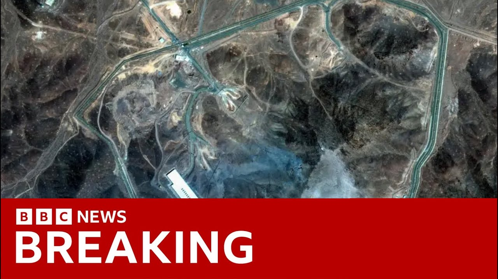

【2025-06-25 BBC新闻｜突发：美国情报泄露称伊朗核计划“可能仅推迟数月”】
Summary: The truce between Israel and Iran appears fragile as Trump criticizes both sides, while questions arise about the effectiveness of U.S. airstrikes on Iran's nuclear facilities.
摘要： 以色列和伊朗之间的休战看似脆弱，特朗普批评双方，同时美国对伊朗核设施空袭的效果引发质疑。

⏱️ Estimated Reading Time: 10 min
📚 六级生词 📚 雅思生词 📚 托福生词 📚 专八生词 📚 SAT生词 📚 考研生词 📚 GRE生词 📚 高考生词
The truce between Israel and Iran appears to be holding for now, hours after President Trump accused both sides of violating the fragile ceasefire that he announced overnight.
以色列和伊朗之间的休战目前似乎仍在维持，此前数小时特朗普总统指责双方违反了他连夜宣布的脆弱停火协议。
As he set off for the NATO summit this morning, the president swore in front of reporters as his frustration, particularly at Israel, boiled over.
今早启程前往北约峰会时，总统在记者面前爆粗口，尤其是对以色列的愤怒爆发。
You'll hear in full what he had to say in a moment.
稍后您将听到他的完整发言。
Tonight, Donald Trump has been warmly welcomed in the Hague, where NATO leaders have sat down to dinner at the start of the two-day summit on defense.
今晚，唐纳德·特朗普在海牙受到热烈欢迎，北约领导人共进晚餐，开启为期两天的防务峰会。
It comes though as questions are now being raised in the United States about just how successful the American air strikes were on Iran's nuclear facilities.
与此同时，美国国内开始质疑其对伊朗核设施空袭的实际成效。
Here's our North America editor, Sarah Smith.
以下是北美编辑莎拉·史密斯的报道。
Israel launched a barrage of air strikes on Tehran as the ceasefire deadline approached, also striking Iranian missile launchers in a last-minute all-out assault.
以色列在停火截止时间临近时对德黑兰发动猛烈空袭，并在最后一刻全面打击伊朗导弹发射装置。
Donald Trump was furious with both Iran and particularly Israel for not respecting the deal.
唐纳德·特朗普对伊朗尤其是以色列不遵守协议感到愤怒。
I'm not happy with Israel.
我对以色列不满意。
You know, when when I say, "Okay, now you have 12 hours. You don't go out in the first hour and just drop everything you have on them.
你知道，当我说"好吧，现在给你们12小时"，你们不该在第一小时就倾尽所有攻击他们。
So, I'm not happy with them.
所以我对他们不满意。
I'm not happy with Iran either.
我对伊朗也不满意。
But I'm really unhappy if Israel's going out this morning because the one rocket that didn't land that was shot.
但如果以色列今早出击，我会非常不满，因为那枚被拦截的火箭。
Perhaps we often see President Trump exasperated, but never actually swearing like this.
或许我们常见特朗普总统恼怒，但从未见他如此咒骂。
You know what? We have We basically have two countries that have been fighting so long and so hard that they don't know what the [\h__\h] they're doing.
知道吗？我们有两个国家打得又久又狠，根本不知道自己在干什么。
Do you understand that? understand that Israel has pushed him too far this time just when he's on his way to take a victory lap at a NATO summit in the Hague, but only if the truce holds.
明白吗？这次以色列把他逼得太紧，而他正要去海牙北约峰会庆祝胜利——前提是停火维持。
He posted on social media, "Israel, do not drop those bombs. If you do, it's a major violation. Bring your pilots home now."
他在社交媒体发文："以色列，别投那些炸弹。否则就是重大违约。立即让飞行员返航。"
Then from onboard Air Force One, in a call to the Israeli prime minister, which the White House described as exceptionally firm and direct, Trump demanded he stick to the ceasefire and then posted again saying, "Israel is not going to attack Iran. All planes will turn around and head home while doing a friendly plane wave to Iran. Nobody will be hurt. The ceasefire is in effect."
随后在空军一号上，特朗普与以色列总理通话（白宫称异常强硬直接），要求其遵守停火，又发文称："以色列不会攻击伊朗。所有战机将调头返航，并向伊朗友好摆翼。无人受伤。停火生效。"
Hello everybody. It's great to be with a friend of mine.
大家好。很高兴与我的朋友在一起。
The NATO Secretary General, Mark Rutte, is hosting Donald Trump in the Hague tonight.
北约秘书长马克·吕特今晚在海牙接待特朗普。
They get on well, but he might be very surprised to find the text messages he sent praising the president posted on social media.
他们相处融洽，但他若发现自己称赞总统的短信被发到社交媒体，可能会很惊讶。
He wrote, "Mr. President, dear Donald, congratulations and thank you for your decisive action in Iran."
他写道："总统先生，亲爱的唐纳德，祝贺并感谢您在伊朗的果断行动。"
That was truly extraordinary, something no one else dared to do.
这确实非凡，是无人敢为之事。
It makes us all safer about aggression by on Air Force One, Mr. Trump is already talking about his desire to agree a ceasefire in Ukraine.
在空军一号上，特朗普先生已开始谈论希望在乌克兰达成停火。
You know, I'd like to see a deal with Russia.
知道吗，我想与俄罗斯达成协议。
As you know, Vladimir called me up. He said, "Can I help you with Iran?" I said, "No, I don't need help with Iran. I need help with you."
如你所知，弗拉基米尔来电问："需要我帮忙解决伊朗吗？"我说："不，伊朗不需要帮忙。我需要你帮忙。"
Donald Trump loves a grand VIP welcome.
唐纳德·特朗普喜欢盛大的VIP欢迎。
Arriving at the Royal Palace in the Hague where he's meeting other NATO leaders, talking to them about spending more on their own defense, about Ukraine, and what he considers to be his crowning achievement in the Middle East.
抵达海牙皇宫会见其他北约领导人，讨论增加国防开支、乌克兰问题及他视为中东最高成就的成果。
It's being reported here in America tonight that those American air strikes on Iran might not have done as much damage to their nuclear facilities as Donald Trump claimed when he said they had been completely obliterated.
美国今晚报道称，对伊朗核设施的空袭可能不如特朗普所称的"完全摧毁"，实际破坏较小。
An early Defense Department assessment that's been leaked says that the core components of Iran's nuclear program may not have been destroyed, that the country might only have been set back a few months, and that much of their enriched uranium stockpiles could have been moved to secret sites before the attack.
泄露的国防部初步评估显示：伊朗核计划核心部件可能未被毁，该国或仅倒退数月，且多数浓缩铀库存或在袭击前转移至秘密地点。
Now, the White House are very angry about they've pushed back, saying this is flat wrong.
白宫对此强烈反驳，称完全错误。
The press secretary said, "Everyone knows what happens when you drop 14 30,000 lb bombs perfectly on their target. total obliteration, she said.
新闻秘书说："谁都知道14枚3万磅炸弹精准命中目标的结果——彻底毁灭。"
But they're not saying the Defense Department uh assessment is untrue.
但他们未否认国防部评估不实。
Sarah Smith, our North America editor. Thank you.
北美编辑莎拉·史密斯报道。谢谢。
Well, Israel and Iran had launched large-scale attacks at each other overnight.
以色列和伊朗昨夜相互发动大规模攻击。
In Iran, targets were hit in the capital, Tehran, and in the northern region of Gilan, where local officials now say at least 16 people were killed.
伊朗首都德黑兰及北部吉兰省遇袭，当地官员称至少16人死亡。
In Israel, the southern city of Beersheba was hit. Four people were killed in a missile strike on a residential building from Jerusalem.
以色列南部城市贝尔谢巴遭袭，耶路撒冷一居民楼被导弹击中致4人死亡。
Lucy Williamson reports.
露西·威廉姆森报道。
Beersheba was still a war zone this morning as Iran announced its commitment to peace.
今早贝尔谢巴仍是战区，而伊朗宣布致力于和平。
Rescue teams bringing out bodies from an apartment block hit in a final salvo of missiles fired minutes before Iran agreed to the truce.
救援队从公寓楼搬出遇难者遗体，该楼在伊朗同意停火前几分钟遭最后一批导弹击中。
One slice through the walls straight into a bomb shelter. Rescuers said, killing several people inside.
一枚导弹穿透墙壁直入防空洞，救援人员称致内部数人死亡。
It's not about how many landed, it's why are missiles still being targeted towards civilian buildings like this.
关键不是命中多少，而是为何导弹仍瞄准此类民用建筑。
There's meant to be a ceasefire this morning.
今早本该停火。
Well, you know, actions speak volumes and this uh speaks for itself.
行动胜于言语，这已说明一切。
I feel Israel need to hit back Iran because Iran killed people.
我认为以色列需回击伊朗，因其杀害平民。
Iran said peace, but there is no peace. No peace.
伊朗声称和平，但并无和平。没有和平。
As we were there, another alert came in, warning of more missiles fired from Iran after Israel had also agreed to the truce.
我们在现场时，又响起警报：以色列同意停火后伊朗发射更多导弹。
But Israeli planes on their way to retaliate were called back home on the orders of Donald Trump.
但以军报复战机按特朗普命令返航。
Tonight, Israel's prime minister vowed to act against any new nuclear threat.
今晚以色列总理誓言应对任何新核威胁。
All the actions that our fighters have taken have brought Iran's nuclear program to ruins.
我军所有行动已使伊朗核计划崩溃。
And if anyone in Iran tries to revive this project, we will act with the same determination and strength to end any such attempt.
若伊朗有人试图重启，我们将以同样决心和力量终结此类企图。
I repeat, Iran will not have nuclear weapons. [Applause]
我重申，伊朗不会拥有核武器。[掌声]
Iran still has the capability to fire missiles at Israel and has warned of a powerful response to any further attacks.
伊朗仍具导弹攻击能力，并警告将对任何进一步袭击强力回击。
The war has shifted power in Israel's favor.
战争使力量对比向以色列倾斜。
But tonight in Tehran, protesters called for their leaders to resist.
但今晚德黑兰抗议者呼吁领导人抵抗。
We must see it through to the end. There's no benefit in stopping now.
我们必须坚持到底。现在停止毫无益处。
Just like what happened in Gaza and Lebanon, Israel, America, and Trump himself cannot be trusted at all.
正如加沙和黎巴嫩事件，以色列、美国及特朗普本人完全不可信。
Iran will avenge the people you killed, said to one day we'll catch you off guard. be sure of that.
伊朗将为你杀害的人复仇，终有一天我们会出其不意。等着瞧。
In northern Israel today, a souvenir from 12 days of conflict, an interceptor used in Israel's air defenses.
今日以色列北部，12天冲突的纪念品——一枚防空拦截弹。
Israel says this short war has made the region safer by weakening Iran as a military threat, but it's weakened the regime as well.
以色列称此短暂战争通过削弱伊朗军事威胁使地区更安全，但也削弱了该政权。
Lucy Williamson, BBC News.
BBC新闻，露西·威廉姆森。